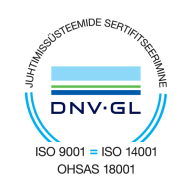

Kokkuvõtvalt aastast
1989. aastal tegevust alustanud ehitusettevõte Nordecon AS (varasemate nimedega AS Eesti Ehitus ja Nordecon International AS) on täna üks Eesti suurimaid ehituskontserne ja tõsiseltvõetav partner kõigis ehitusturu valdkondades.
Juba aastaid on meie tegevusstrateegia nurgakiviks olnud keskendumine ehituse peatöövõtule ja projektijuhtimisele. Pakume oma klientidele kvaliteetset ja kompleksset teenust nii äri-, elamu-, tööstus- ja ühiskondlike hoonete püstitamisel kui ka taristu vallas – teede, tehnovõrkude ja sadamarajatiste ehitamisel. Lisaks tegeleme kontsernis betoonkonstruktsioonide ehitamise, raske ehitustehnika rentimise ning teede hooldamisega. Kokku kuulub Nordeconi kontserni 11 aktiivse majandustegevusega ettevõtet, mis tegutsevad lisaks Eestile ka Rootsis, Soomes ja Ukrainas. Nordecon AS on Eesti Ehitusettevõtjate Liidu, Digitaalehituse klastri ja Eesti Kaubandus-Tööstuskoja liige. Alates 18. maist 2006 on Nordecon AS-i aktsiad noteeritud Nasdaq Tallinna börsil.
Ava rohkemSulge
<<<<<<< HEADAva rohkem
Eesti ehitusturg on võrreldes eelmise kolme aastaga, kus iga-aastane kasv oli märkimisväärne, stabiliseerunud. Eesti Statistikaameti esialgsete andmete kohaselt moodustasid Eesti ehitusettevõtete omal jõul tehtud tööd Eestis ja välisriikides kokku jooksevhindades ligikaudu 3,2 miljardit eurot, mis oli 3% rohkem kui 2018. aastal. 2018. aastaga võrreldes ehitati hooneid 8% rohkem ning rajatisi 6% vähem. Ehitusmahud Eestis jäid 2018. aasta tasemele. Kohalikku ehitusturgu mõjutas 2019. aastal enim rajatiste ehitusmahtude vähenemine, kuid hoonete ehitus kasvas mõnevõrra. Välismaal tegutsevate Eesti ehitusettevõtete ehitusmahud suurenesid võrreldes 2018. aastaga rohkem kui poole võrra eelkõige hoonete ehituse arvelt. Välisriikidesse tehtud ehitusmahtude osatähtsus kogu ehitusmahus oli 2019. aastal 8%. Alates 2012. aastast kasvab jätkuvalt uute eluruumide ehitus.
2019. aastal enim rajatiste ehitusmahtude vähenemine, kuid hoonete ehitus kasvas mõnevõrra. Välismaal tegutsevate Eesti ehitusettevõtete ehitusmahud suurenesid võrreldes 2018. aastaga rohkem kui poole võrra eelkõige hoonete ehituse arvelt. Välisriikidesse tehtud ehitusmahtude osatähtsus kogu ehitusmahus oli 2019. aastal 8%. Alates 2012. aastast kasvab jätkuvalt uute eluruumide ehitus. 2019. aastal lubati kasutusse 7 014 uut eluruumi, mis on 542 eluruumi rohkem kui eelmisel aastal. Suurem osa valminud eluruumidest asub korterelamutes ning enim valmis uusi eluruume Tallinnas, selle lähiümbruses ning Tartus. Enim oli vastvalminud eluruumide seas kahe- ja neljatoalisi eluruume, eluruumide keskmine pind oli 94 ruutmeetrit. Eluruumide ehitamiseks väljastatud ehituslubade arv suurenes võrreldes 2018. aastaga. Ehituslubasid anti 2019. aastal välja 8 025 uue eluruumi ehitamiseks. 2019. aastal lubati kasutusse 1 410 mitteelamut kasuliku pinnaga 700 000 ruutmeetrit, mis on vähem, kui 2018. aastal. Enim lisandus uusi tööstus-, lao- ja kaubanduspindasid.
Ava rohkemSulge
Meie missiooniks on jätkuvalt pakkuda klientide vajadustele ja võimalustele vastavaid lahendusi hoonete ja rajatiste ehitamiseks, aidates neil seeläbi hoida ja kasvatada oma vara väärtust.
2019. aasta oli Nordeconi kontserni jaoks edukas mitmel moel. Suutsime täita endale seatud eesmärgid tegevuse kasumlikkuse suurendamisel, sõlmisime rekordilises mahus uusi ehituslepinguid, kasvatasime tegevusmahte rahvusvahelistel turgudel ja astusime jõulisi samme oma tegevuse digitaliseerimisel. Kõik see sai teoks, arenedes ühtse meeskonnana ja toetudes meie töötajate erialastele teadmistele ja oskustele.
Meie strateegia üks alustala on tegevuse laiapõhjalisus ehk olla Eesti turul esindatud enamuses ehitussegmentidest, et tagada ettevõtte pikaajaline tasakaalustatud kasv. Analüüsime iga-aastaselt nii ehitusturgu kui oma portfelli, hinnates muuhulgas käimasolevate projektide jaotust hoonete ja rajatiste segmendis.
Ava rohkemSulge
Meie vastutustundliku tegevuse vundament tugineb kohustuslike nõuete täitmisel – alates seadustest ja regulatsioonidest kuni ausate lepinguliste suheteni. Turuliidri ja avaliku ettevõttena tahame aga olla eeskujuks ning võtta eestkõneleja suurema rolli ehituse säästlikumaks, keskkonnasõbralikumaks, efektiivsemaks ja läbipaistvamaks muutmisel.
Nordeconi roll ja vastutus ühiskonnas laiemalt on:
Ava rohkemSulge
Ehituses on tulemus parim siis, kui lõpptulemuse nimel ja ühtsetel põhimõtetel pingutavad ühiselt nii tellija, arhitekt, projekteerija, omaniku järelevalve kui ehitaja. Eduka projekti aluseks on avatud ja aus suhtlus kõigi osapoolte vahel ning ehitusettevõtte kvaliteedi näitaja on korrektselt juhitud projektid ning tähtaegselt ja nõutud kvaliteedile vastavalt valminud hooned ja rajatised.
Vastutus algab iga üksiku inimeste otsustest. Juba insenerieetika tasandil püüdlevad Nordeconi töötajad alati parima võimaliku plaani ja teostuse poole, et anda panus efektiivsematesse, säästlikematesse ja jätkusuutlikumatesse lahendustesse. Meie ehitusprojektide eduka teostamise aluseks on aga teadlik ja süsteemne kvaliteedijuhtimine.
Teostatud tööde vastavuse ja püstitatud eesmärkide saavutamiseks järgime kõigis projektides:
Kontserni emaettevõttes Nordecon AS määratakse igale valminud objektile eraldi kvaliteedikoefitsient, mis arvutatakse kokku viie näitaja alusel:
Ava rohkemSulge
Nordeconis loodud ja juurutatud juhtimissüsteemi vastavust kvaliteedijuhtimissüsteemi standardi ISO 9001, keskkonnajuhtimissüsteemi standardi ISO 14001 ning töötervisehoiu ja tööohutuse juhtimissüsteemi standardi OHSAS 18001 nõuetele kinnitavad DNV GL poolt välja antud sertifikaadid.
Ehitus on kogu maailmas madala tootlikkusega tootmisharu. Hoogsalt arenev digi-ehitus ehk mitmesugused digitaliseerimise lahendused aitavad ehitust kaasajastada, tõsta efektiivsust ja muuta sektori kuvandit atraktiivsemaks eriala valivate noorte seas. Nordecon tegutseb aktiivselt Digitaalehituse klastri juhatuses, et ehitus- ja arendustegevuse vallas laiemalt kaasa rääkida ning digitaliseerimisega seotud riiklikel sammudel kätt pulsil hoida. Seni kasutatud digi-lahendused on muutumas igapäevaseks standardiks ning erinevate programmide võimalusi on plaanis tänasest veelgi enam rakendada. Lisaks mugavusele ja kiirusele aitab digitaliseerimine kaasa ka ehitussektori keskkonnahoidlikumaks, ohutumaks ja läbipaistvamaks muutmisele.
Meie igapäevatöös väljendub digi-ehitus eelkõige kolmes aspektis:
Ava rohkemSulge
Nordecon soovib pakkuda oma töötajatele kaasaegset ja professionaalset töökeskkonda, luues seeläbi võimalused isiklikuks arenguks, rahuldust pakkuvaks töökogemuseks ja tulemuslikuks tööks. 2019. aastal töötas kontsernis pea 700 töötajat, neist 84% mehed ja 16% naised. Meie töötajate keskmine staaz on ligi 7 aastat. Lisaks igapäevasele avatud ja kaasavale organisatsiooni
2019. aastat jäävad iseloomustama mitmed märksõnad:
Järelkasv
Ava rohkemSulge
>>>>>>> 709c40894e5dc2c30379757ecf3a363239b45b2b2019. aasta jooksul ei toimunud meie äritegevuse fookuses Soomes muudatusi. Kontserni tütarettevõte Nordecon Betoon OÜ koos Soomes registreeritud tütarettevõttega NOBE Rakennus Oy jätkas alltöövõtu korras betoonitööde teostamist Soomes ning
2019. aasta jooksul ei toimunud meie äritegevuse fookuses Soomes muudatusi. Kontserni tütarettevõte Nordecon Betoon OÜ koos Soomes registreeritud tütarettevõttega NOBE Rakennus Oy jätkas alltöövõtu korras betoonitööde teostamist Soomes ning tegevusmahud kasvasid 2019. aastal võrreldes eelmiste aastatega oluliselt.
Kontserni tegevus Ukrainas on viimasel aastal mõnevõrra vähenenud. Sõlmitud lepingute osas ollakse jätkuvalt konservatiivne. Sõlmitud on vaid lepinguid, mille puhul oleme veendunud, et kaasnevad riskid on asjaolusid arvestades mõistlikud. Mahukaid investeeringuid nõudvad tegevused kinnisvaraarendusprojektidega on jätkuvalt peatatud, et minimeerida riske ning oodata olukorra selginemist Ukrainas.
(2018: 223 mln. €)
Müügitulu